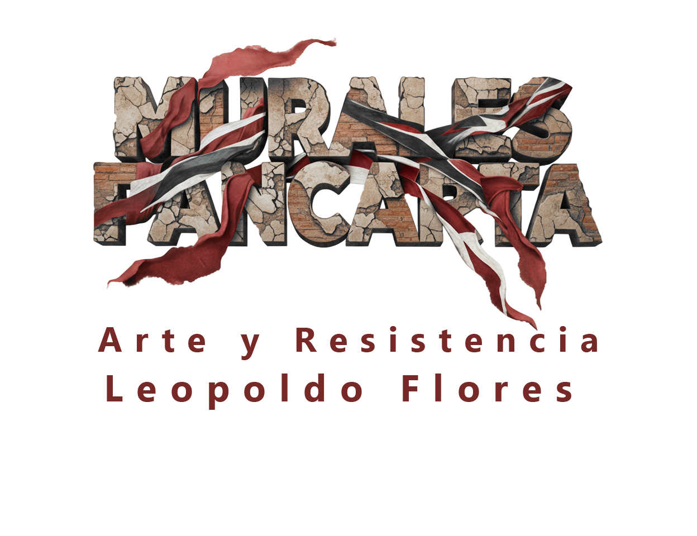
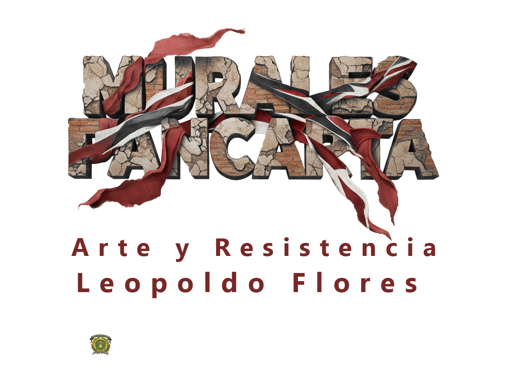
EL mural pancarta irrumpe en la calle. Es pintura a gran escala, móvil y pública. Leopoldo Flores lo definió como grandes telas colocadas en exteriores para sostener una esperanza monumental cuando el muro institucional ya no bastaba. Su función no es decorativa. Activa al transeúnte y convierte el espacio urbano en foro político.
En este recorrido virtual por una ciudad en ruinas, las telas cuelgan entre fachadas derruidas. La ruina no es sólo material, es memoria de violencia, de juntas militares, de guerras y de la vida cotidiana sometida a la corrupción y la desigualdad. En este escenario, los murales pancarta aparecen como dispositivos de resistencia; denuncian, interpelan y convocan a la acción colectiva.
El cuerpo de obra compone de pancartas de la serie Cien hecatombes, las acciones de Arte Abierto y obras presentadas en el Palacio de Bellas Artes en la Ciudad de México y en París. En 1972, Leopoldo Flores rompió la lógica museal: colgó una pancarta en la fachada de la Casa de Cultura de Toluca (hoy Edificio del Poder Legislativo ) y extendió la obra pintando sobre el suelo, de modo que el público la pisaba. La serie Cien hecatombes denunció la violencia como sacrificio colectivo; el hombre aparece como manada que camina al matadero. Raquel Tibol describió estas obras como murales luctuosos, con cuerpos torturados cuya sangre se extendía por el pavimento.
El cuerpo de obra compone de pancartas de la serie Cien hecatombes, las acciones de Arte Abierto y obras presentadas en el Palacio de Bellas Artes en la Ciudad de México y en París. En 1972, Leopoldo Flores rompió la lógica museal: colgó una pancarta en la fachada de la Casa de Cultura de Toluca (hoy Edificio del Poder Legislativo ) y extendió la obra pintando sobre el suelo, de modo que el público la pisaba. La serie Cien hecatombes denunció la violencia como sacrificio colectivo; el hombre aparece como manada que camina al matadero. Raquel Tibol describió estas obras como murales luctuosos, con cuerpos torturados cuya sangre se extendía por el pavimento.
En 1976, el manifiesto Arte Abierto planteó un arte de participación masiva y comunicación directa con el pueblo. Las acciones se pintaron sobre telas colocadas en bardas, techos, muros, o en la calle, y en muchas ocasiones eran acompañadas de música y teatro.
En este espacio virtual, las obras se reactivan al ubicarse en un espacio de ruina: cuelgan entre edificios colapsados y se extienden sobre calles quebradas. El espectador de hoy es invitado a recorrer, transitar y reflexionar sobre una representación virtual de un pasado especulativo.
La ruina como lente en el vacío de la ciudad, recupera la condición de alarma de las pancartas. Cada tela nombra lo innombrable: guerra, represión, manada, sacrificio. No pide permiso. Ocupa. Señala. Resiste. Murales Pancarta, arte y resistencia reitera una hipótesis: el arte público, cuando es dispositivo, no ilustra la protesta, la produce. La calle es el medio y el mensaje.
Así, Murales Pancarta, arte y resistencia no sólo recupera la obra de Leopoldo Flores sino que re-enfrenta su sentido original bajo un nuevo territorio: las pancartas no son decoraciones sino dispositivos de alerta y protesta. Su instalación en una ciudad en ruinas invita a pensar el arte como huella y herramienta de lucha social, como memoria de las luchas populares y como llamado a la acción. La calle es la galería, la ruina es el marco, y la obra es resistencia.
1. “Mural pancarta I”
• Técnica y datos: Acrílico sobre tela, 2.4 × 10.05 m, 1974.
• Referencias hemerográficas: Excélsior, 29 de junio de 1972; otra nota en marzo de 1971 con referencias a Orozco y Guernica.
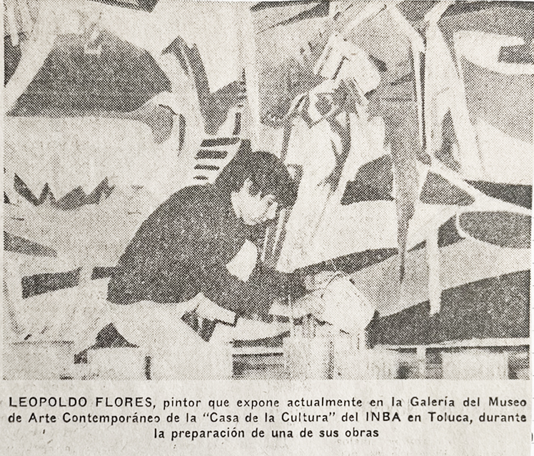
2. “Mural Pancarta III”
• Técnica y datos: Acrílico sobre tela, 5.80 × 7.05 m, 1977.
• Presentación: 100 Hecatombes (registro fotográfico).
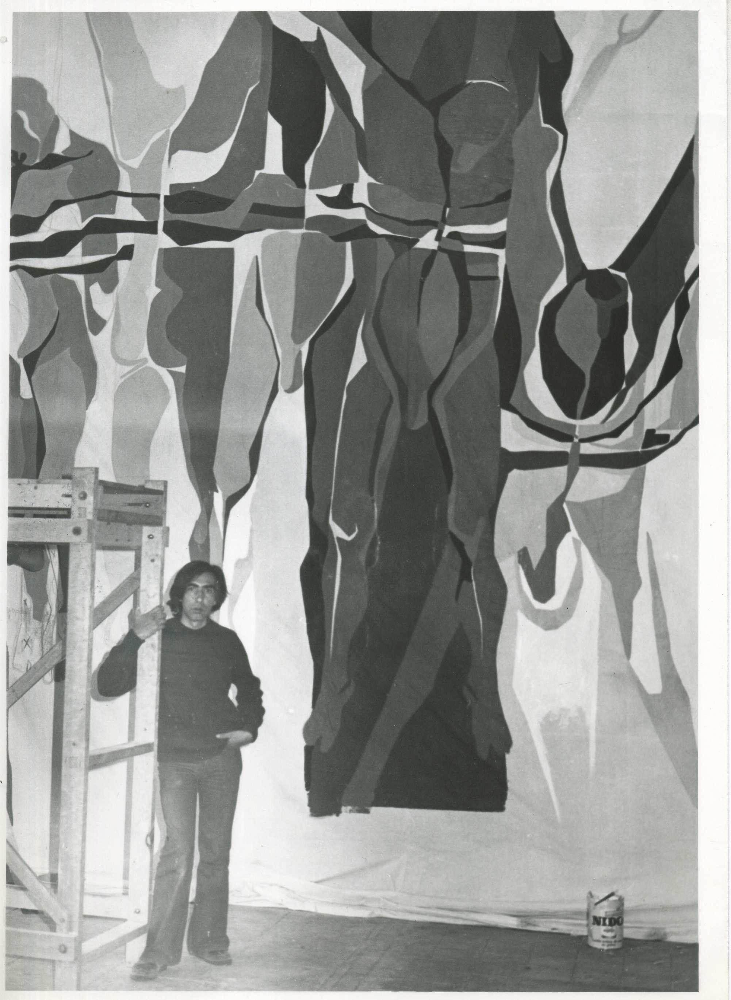
3. “Nosotros mismos”
• Técnica y datos: Acrílico sobre tela, 2 piezas, 2.50 × 9.90 m, s/f.
• Nota periodística: 1970.
4. “Mural pancarta IV”
• Técnica y datos: Acrílico sobre tela, 7 × 19 m, s/f.
• Exhibición: Bellas Artes.
• Relación social: No documentada en texto específico; pieza situada en núcleo crítico de La gran manada en 1973.
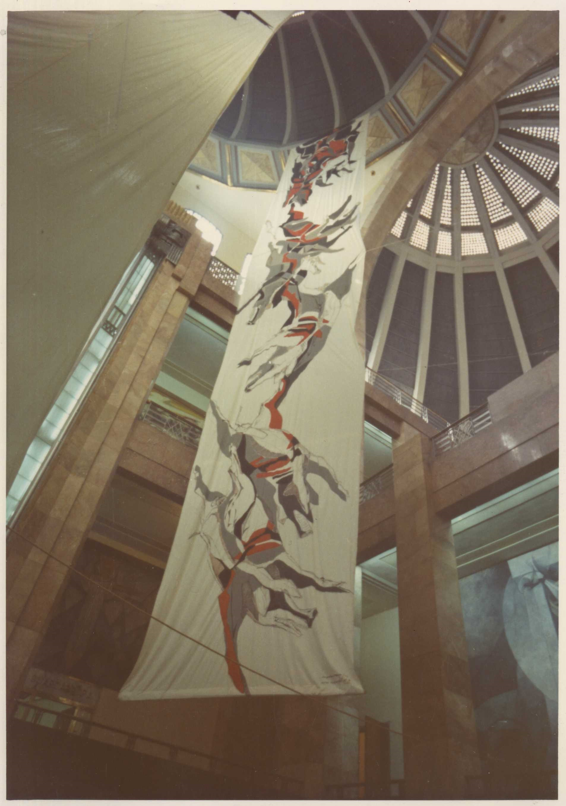
5. Mural pancarta No. 2 y No. 3 “Cien hecatombes”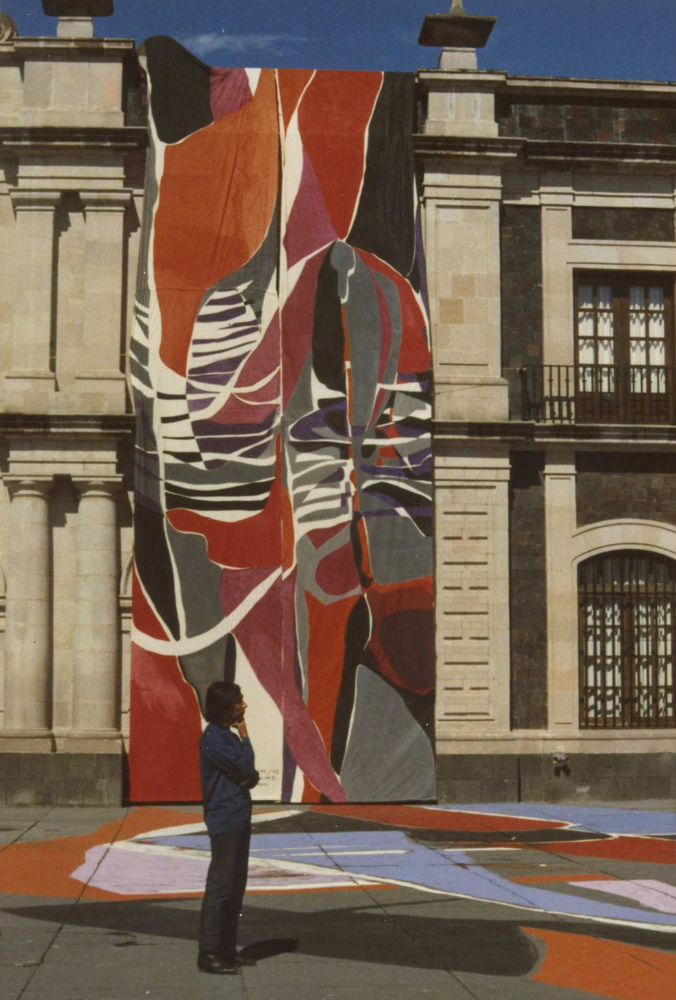
6. Mural Pancarta No. 1 “Cien hecatombes”
• Técnica y datos: Acrílico sobre tela, 2.30 × 22.60 m, 1972.
• Observación: Mural pancarta III 100 Hecatombes. Exhibición: 100 Hecatombes.
• Reseña temática general del ciclo: manada, sacrificio y denuncia de violencia estatal y colectiva.
• Recepción pública en prensa: irrupción urbana, impacto en transeúntes, tintes “luctuosos” y uso del espacio público.
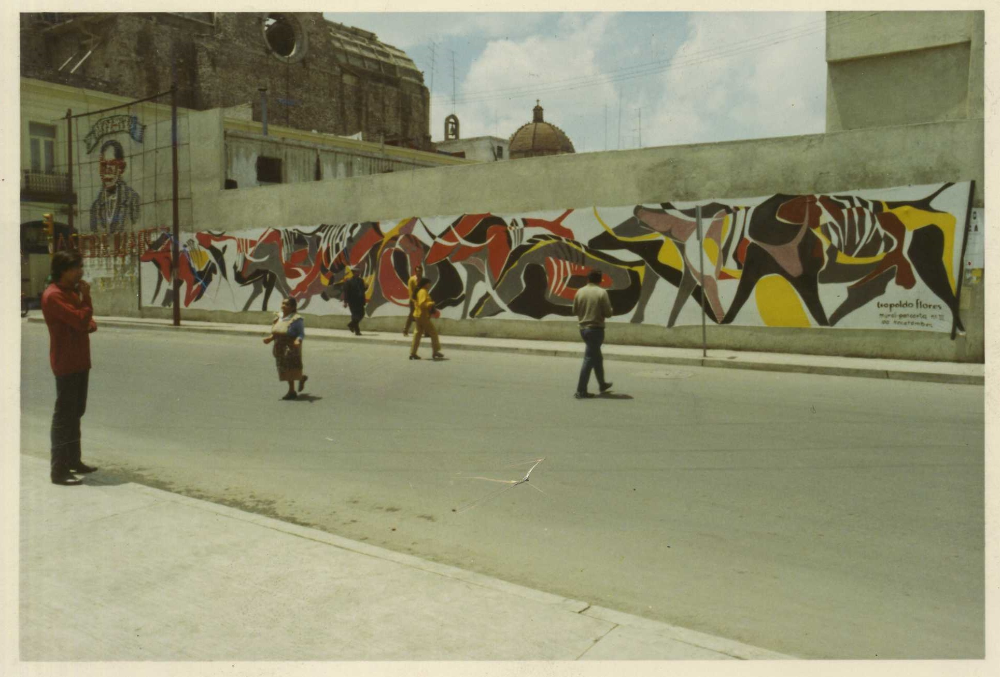
7. Mural Pancarta “A la opinión pública”
• Técnica y datos: Acrílico sobre tela, 19 × 12.30 m, s/f.
• Exhibición: Bellas Artes.
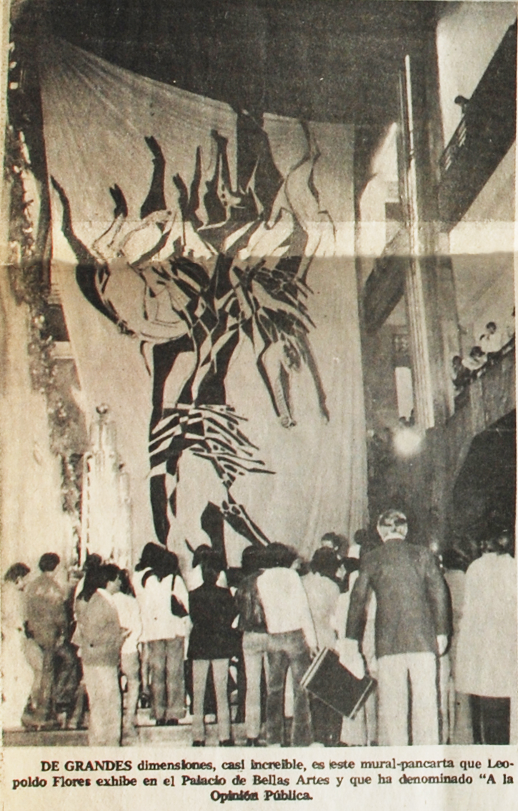
8. “Arte Abierto acción no. 3”
• Técnica y datos: Acrílico/tela, 2 × 21.6 m, 1976.
• Marco: Arte Abierto 1976 y manifiesto de participación.
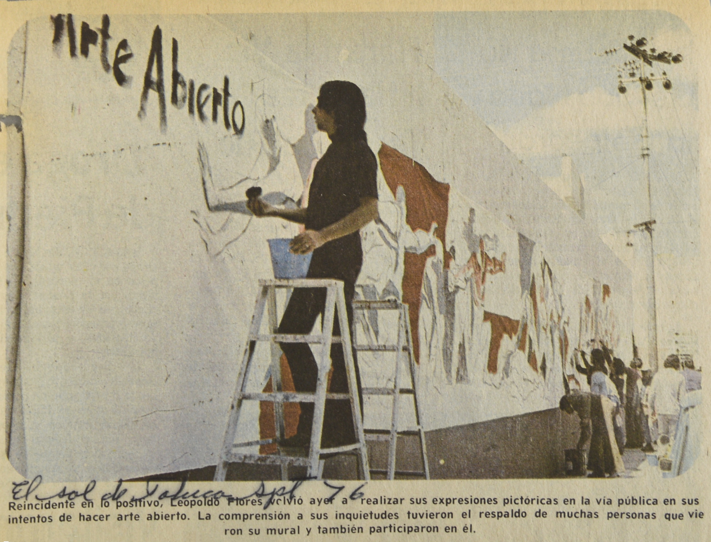
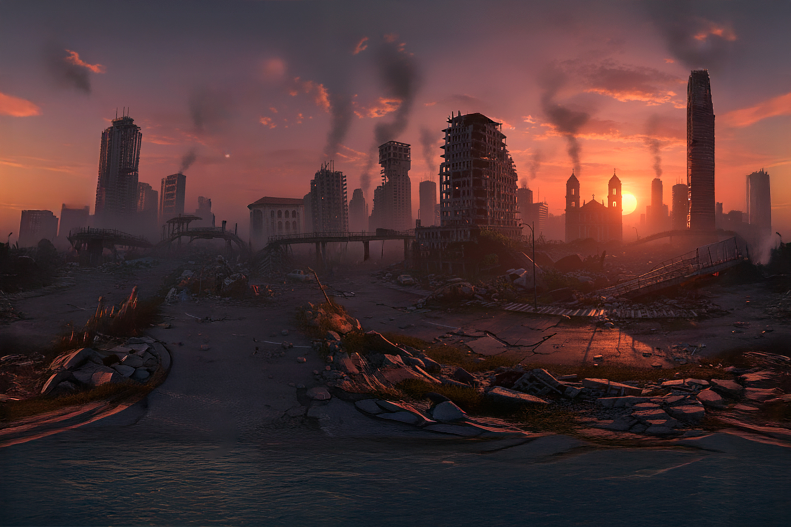